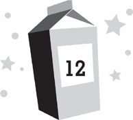

Lunar day 217
Lunchtime
Almost every adult at MBA was recruited to the search party. Only three stayed behind. Lars and Sonja Sjoberg were two of them, of course; the Sjobergs never thought about anyone but themselves. They hadn’t emerged from their suite since Nina’s disappearance had been discovered. Either they didn’t know Nina was missing, or they didn’t care.
The other adult who stayed at MBA was Dr. Marquez. The official reason for this was that someone had to keep an eye on all the kids and that Dr. Marquez, as our base psychiatrist, was best equipped to help all of us deal with the potential trauma of Nina’s disappearance. The unofficial reason was that Chang thought Dr. Marquez was an idiot. He believed Marquez was a lousy psychiatrist who’d only been brought to the moon because NASA wanted his wife up there and because he was famous. (Dr. Marquez had published a bestselling self-help book back on earth and was now working on one about mental health on the moon called Lunarnauts and Lunatics.) However, Dr. Marquez didn’t seem too upset about being asked to stay behind. In fact, he seemed almost relieved. I’d heard rumors that he’d had some claustrophobia issues with his space suit on the trip up to the moon—panicking that he was running out of air and flipping out—and so he wasn’t in any hurry to suit up again and go out onto the lunar surface.
The rest of the adults were all extremely competent, though. They quickly assigned themselves to teams and set out in search of Nina. There were twelve of them, so they broke up into six groups of two to cover more ground. Four adults stayed close to the base: Drs. Brahmaputra-Marquez, Janke, Goldstein, and Iwanyi. The other eight adults took moon rovers and spread out farther.
The moon rover garage had been badly damaged a month before, when Garth Grisan had tried to kill me with the base’s giant robot arm. Luckily, two of the three main rovers had survived the attack, only needing minor repairs. The third had been totaled, although the truth was, we had never needed all three big rovers at once anyhow. The rovers were going to be far more important once Moon Base Beta began construction. (NASA was working feverishly to get us a new one before then.) In the meantime, there was a smaller emergency backup rover that could fill in.
The big rovers could seat four adults at once. They weren’t much different from the ones the Apollo missions had brought to the moon seventy years before. They looked like souped-up go-karts: basically a chassis, four tires, and a small engine. They weren’t fancy, but they didn’t have to be. All they really had to do was get everyone from place to place.
Dr. Kim and Dr. Alvarez, along with Dr. Merritt and Dr. Balnikov, set off to the north in one, planning to search Solar Arrays 1 and 2. Meanwhile, Mom and Dad and Chang and Dr. Howard went off toward the future site of Moon Base Beta. This seemed pointless to me; Nina obviously hadn’t taken a rover herself, so she probably wouldn’t have ranged too far away, especially when there were moon rocks all over the place. That was all the moon was, really—a massive ball of rocks. But Chang argued that there was no guessing what Nina might have done. After all, no one had figured she would ever leave the base solo to steal moon rocks. Therefore, if she could have gone to the Moon Base Beta site, then it was worth checking out.
In the meantime, all the kids had been assigned to go back to school.
We didn’t, though. First of all, none of us could concentrate. Second, none of us wanted to do it. Having your moon-base commander disappear seemed as good an excuse as any for a holiday, and Dr. Marquez was powerless to stop us. In fact, his own children led the rebellion.
We had all gathered in the rec room for school as ordered, but Patton and Lily Sjoberg didn’t even bother to show up, and once Cesar realized they were playing hooky, he decided to join them. Dr. Marquez was one of those parents who didn’t really believe in discipline, so the only threat he could muster against Cesar was: “If you don’t come back here, I will be very disappointed with you.” “Deal,” Cesar had said, and then walked out.
After that, Roddy had complained that he shouldn’t have to stay in school if Cesar wasn’t there, and Inez said that if Roddy didn’t have to go, then she wouldn’t either. The two younger Marquez kids stormed off, ignoring their father’s weak warnings for them to not disobey him. After that, the rest of us went on strike as well.
In truth, Dr. Marquez didn’t seem that disappointed in his children—or any of the rest of us. Instead, he seemed rather pleased to have some time to himself, and went to his residence to watch television.
Violet and Kamoze turned on the main SlimScreen in the rec room and started to watch Squirrel Force, their favorite TV show. I went with Kira to the mess hall to get lunch. I’d expected Roddy to go off to play veeyar games someplace, but instead he followed us. The only thing that interested Roddy more than virtual reality at MBA was girls.
Lily Sjoberg and Kira couldn’t have been any more different, but Roddy didn’t seem to care. His interest was constantly ping-ponging from one to the other, usually based upon whoever was closest to him. The fact that neither one liked him did nothing to deter him. He did seem to realize that Lily Sjoberg was a long shot, but he kept lurking around her anyhow, as if hoping that someday she’d see the light. As for Kira, he truly appeared to believe that her disdain for him was merely covering up her real feelings of affection. So he tried harder with her, doing everything he could to break down her resolve, unaware that this only made her dislike him even more.
On this day, as usual, he made the mistake of thinking the best way to impress her was to show how brilliant he was. He cornered us while we were rehydrating our lunches and said, “You know, statistically, the chances of them finding Nina out there are extremely slim.”
Kira regarded him with her usual distaste. “No, they’re not. There’s twelve people looking for her.”
“Twelve people can barely cover any ground at all,” Roddy sniffed. “Do you have any idea how staggeringly large the search area is?”
“If I say yes, do you promise not to tell us?” I asked.
Kira giggled.
Roddy scowled at me and then turned his attention to Kira. “We’re assuming that Nina left the base at around midnight last night, right? That’s when she shut down the security cameras to cover her exit. . . .”
“That’s only an assumption,” I said, pulling my lunch out of the rehydrator.
“It’s a good assumption,” Roddy corrected. “It might as well be a fact. The cameras go down at midnight. Nina disappears out the air lock right afterwards. Obviously, she turned the cameras off.”
“You really believe she went out on the surface?” Kira asked. “I thought you were sure she was a cloud of sentient nanobots.”
“And you were sure she’d been murdered,” Roddy countered. “Both were completely plausible theories. But in the light of new information, I realize that Nina was not murdered and is most likely human and left the base through the air lock.”
“Is ‘most likely human’?” I repeated.
“If anyone at this base is a cyborg, it’s her,” Roddy declared.
I groaned. “You mean, you think she’s part robot?”
“It’s no secret that NASA has been experimenting with cyborg technology for years,” Roddy said, which was completely wrong as far as I knew.
Kira’s food finished rehydrating as well. She had selected chicken enchiladas for lunch, while I’d picked shrimp cocktail. We took our plates and headed to the drink station.
Roddy stuck with us. “The point is, Nina has been out on the lunar surface for around twelve hours. Now, Nina was in excellent shape, so she could certainly cover three miles an hour, if not four. But for the sake of argument, let’s say it was three. Three miles an hour for twelve hours is thirty-six miles. Which means the potential search area is a circle with a radius of thirty six miles—or approximately four thousand seventy square miles.”
I paused in the midst of filling a cup with reclaimed water, alarmed by this number. “Nina probably didn’t walk thirty-six miles in a straight line,” I said.
“That’s exactly the problem,” Roddy pointed out. “If she had, we could simply search the perimeter of the circle. But instead, she’s probably at some random point inside that circle. Even if she only went three miles out, the search area would still be over twenty-eight square miles. That’s a lot of ground for twelve people to cover. It’d be like finding a needle in a haystack out there.”
I shared a concerned look with Kira. We had both been out on the surface a month before. We knew what it was like out there. The entire landscape was dull and gray. Our white space suits blended right into it. If Nina wasn’t moving, it would be extremely hard to spot her out in the wasteland, if not impossible.
Before I could say anything, Zan Perfonic appeared. So as not to startle me, she projected an image of herself wandering in from the staging area and waving for my attention. In fact, she did such a good job of being unobtrusive that I almost didn’t realize it was her at first.
“Can you excuse me?” I asked Kira. “I have to go to the bathroom.”
Kira shot me a look of betrayal, not wanting to be left alone with Roddy. “Right now?”
“It’s an emergency,” I told her, then left my lunch on the counter and hurried off.
Behind me, I heard Roddy speak in what he thought was his suavest voice. “Don’t worry, Kira. I’d be happy to dine with you.”
As I headed to the bathroom, my watch vibrated, indicating a call was coming in. I glanced at it and saw it was Riley Bock. She’d probably just woken up back in Hawaii. Normally, I would have answered immediately, but I needed to talk to Zan and I didn’t know how long she’d be around. I had no choice but to ignore the call.
Zan followed me into the bathroom. Since all the adults were out on the surface, it was unlikely anyone else was in there, but I checked the stalls anyhow out of habit. “What’s up?” I asked, trying to keep the conversation in my head.
“That’s what I came to ask you,” Zan replied. “Any sign of Nina?”
I quickly recapped everything we’d learned since I’d seen Zan earlier that morning. She listened intently, though she was obviously thrown when I got to the part about Nina smuggling rocks. “Why would she do that?” she asked. “It seems like such a big risk to take.”
“For money, I guess.”
Zan frowned. Money was a concept that had caused her trouble in the past. Apparently, her planet didn’t have anything like it, which had seemed odd to me until she’d pointed out that even on our own planet, money was a bizarre concept as well. After all, out of the billions of species of animal, humans were the only ones who used it. And it often seemed to cause as many problems as it solved.
“Isn’t Nina being paid money for her job on the moon?” Zan asked.
“Yes.”
“And she doesn’t really need any of this money while she’s up there, right?”
“Right. All our food and stuff up here is free. The money would really be for when she gets back to earth.”
“And it would be worth jeopardizing her life, her job, and her reputation just for more money?”
“Well, according to my parents, it’d be for a lot more money,” I replied. “Millions of dollars, maybe.”
Zan looked at me curiously, trying to comprehend this. “Why would anyone need so much money?”
“So they can buy more stuff.”
“You mean, like extra food, in case of emergencies?”
“Er . . . no. Like fancy cars and mansions.”
“What’s a mansion?”
“It’s a giant house. Like with a whole bunch of bedrooms and ten bathrooms.”
“Why would Nina need a house with ten bathrooms? Does she have some sort of bowel disorder you haven’t mentioned?”
“No. It’s a kind of status symbol.”
“Having an excess of places to expel bodily waste in your home is a sign of status on earth?”
“Er . . . yes. I guess.” This conversation wasn’t going quite the way I’d expected. “It’s really more about the size of your house, though. Like, the Sjobergs are crazy rich, and I’ve heard they have one of the biggest houses in all of Europe. As well as other mansions all over the world.”
“Why would one family need huge houses all over the world? It sounds like a tremendous waste of precious resources.”
“Yes,” I agreed, feeling kind of ashamed about humanity. “It is. But that’s how things work on earth. The more money you have, the fancier your life is.”
“And the fancier your life is, the happier you are?”
“That’s kind of the idea.”
“But you think that might not be true.”
“Well, we all definitely need to make money to live back on earth. But my family doesn’t have a whole lot and we’re pretty happy. While the Sjobergs have tons and they seem miserable all the time. That might only be because they’re stuck here, but I’m not sure.”
Zan nodded, trying to get her mind around all this. It made me wonder what life was like on her planet. How different was it from earth? How did they get by without money? Did they trade? Did they even have jobs? Hundreds more questions occurred to me, but I didn’t have the time to ask a single one. Chances were, Zan wouldn’t answer them anyhow.
“So,” Zan said, “you believe that Nina might have taken all these risks solely to earn a great deal of money.”
“That’s the only explanation anyone can come up with for the moon rocks in her room.”
“I always got the impression from you that Nina wasn’t one to break the rules.”
“That’s what I thought about her. And everyone else did too. We’re all pretty shocked about this.”
“There’s no other reason she might have taken these actions?”
“Maybe, but I don’t know what it is. And neither does anyone else. Whatever the case, it seems she’s definitely out on the surface somewhere.”
Zan frowned again.
“What’s wrong?” I asked.
“It’s hard to describe. It has to do with the feeling I got from her.”
“Did you sense that someone had tried to hurt her?”
Zan looked at me curiously. “You mean, like this was another murder attempt?”
I got the feeling she was judging all of humanity. “Er . . . maybe.”
“I can’t tell if she was hurt or not. Only in danger. And when I sensed her, it didn’t seem like she was out there, on the surface.”
“So where is she, then?”
“I don’t know. I can’t explain it, other than that it was dark.”
“Like how? Did she fall into a hole or something?”
“Not exactly.”
I sighed. “It’d be much more helpful if you could tell me where she is rather than where she’s not.”
“I’m doing my best.”
“Well, try harder. Can’t you try to sense her again?”
“That’s much more difficult than you realize.”
“Why?”
“I’m transmitting my thoughts over trillions of miles of space,” Zan snapped. “Does that sound easy to you?”
“No,” I conceded. “Sorry. I’m just frustrated.”
“I am too.”
“Is there anything else you can tell me about Nina?” I asked.
Zan sighed. She looked very sad, even a bit embarrassed about her inability to help. “Perhaps I can try once more, although I can’t promise anything. . . .”
There was a sudden shout from outside the bathroom. It was Kira, and she sounded like she was upset about something.
What now? I thought. Then I told Zan, “I’ll be right back,” and raced out the door.
The Sjobergs had made an appearance. It was the entire family this time: Lars and Sonja had finally emerged from their suite, along with Patton and Lily. It was the first time I’d seen the adult Sjobergs in days. Like their children, they were both extremely blond and so pale-skinned, it seemed that they had never been in the sun. Lars had the build of an athlete who’d gone to seed: He was big and strong, but now he’d grown a few extra chins and his large belly strained against his shirt. Sonja had undergone so many plastic surgeries, it was hard to imagine what she’d looked like before. Her whole face appeared to be cobbled together from spare parts, some of which weren’t even human. Her lips, for example, were so enormous they might have been swiped from a chimpanzee. On their own, each bit of her face—her eyes, nose, chin, and so on—might have been beautiful, but mixed together, they were unsettling. To make matters worse, the Sjobergs didn’t merely look scary; they were scary. They were the meanest people I’d ever met in my life, and as usual, they were up to no good.
They had entered the greenhouse. Lars and Sonja were hungrily inspecting the ripe strawberries and tomatoes, while Patton and Lily had stationed themselves at the door to keep everyone else out.
At any other time, the Sjobergs would never have done such a thing. The other adults wouldn’t have let them get away with it. But now, the Sjobergs obviously figured they could bully us kids out of the way.
Kira was taking a stand, though. “Get out of there!” she shouted. “That food is for all of us!”
“This food is a mere fraction of what we deserve,” Lars snarled through the glass. “We paid a half billion dollars to come up to this horrible place. The rest of you came for free! It is only right that we are entitled to more rewards than you.”
Zan had emerged from the bathroom with me. She stood beside me, staring angrily at the Sjobergs. I didn’t know if she was actually feeling anger toward them or if she was merely sensing mine and reacting.
Meanwhile, Roddy was unchivalrously backing away from Kira, trying to indicate to the Sjobergs that he wanted no part of this. “You have a good point,” he told them.
“Roddy,” I said. “Go get your father.”
“Right!” he agreed, glad for the excuse to leave the room. In his haste to go, he stumbled over his own feet and caromed off the wall.
Inside the greenhouse, Lars and Sonja were taunting us, making a show of slowly plucking the ripest strawberries. Sonja selected the biggest one, held it up to her nose, and inhaled deeply. “Oh my. It smells delicious.”
Kira looked to me, expecting me to do something.
I gave it my best shot. “You know what’s going to happen when the others come back and find out you’ve done this?” I asked. “They’ll beat the crap out of you.”
“I highly doubt that,” Lars said. “And they couldn’t possibly come up with any punishment worse than keeping us here. So we might as well take what we rightfully deserve.”
Sonja bit into the strawberry, then groaned with pleasure. Juice trickled down her surgically enhanced chin. “Oh, Lars,” she gasped. “It’s delicious.”
A nice person would have at least offered to share with her family. Instead Sonja simply wolfed the rest of the strawberry down in front of them.
“Hey!” Lily yelped. “Save some for us!”
“Don’t worry, princess,” Sonja cooed. “There’s plenty for us all.” Then she plucked a few more berries for herself.
Lily and Patton obviously didn’t trust their mother to save anything for them, so they abandoned their post at the door to plunder the strawberries as well. Each grabbed a handful and gobbled them down without any self-control at all.
Meanwhile, Lars picked a strawberry for himself, looked right through the glass at us, and sank his teeth into it, the same way a shark would attack a seal.
My stomach growled in protest. It had been a month since I’d last had a piece of fresh fruit, and watching the Sjobergs devour what we’d been waiting so long for was torturous.
“Chang won’t care about the rules,” I said. “And Nina’s not here to hold him back. When he finds out about this, he’ll go ballistic on you.”
“What’s to say he’ll even think we did this?” Lars asked, pointedly chewing his strawberry. “Maybe he’ll think you little gremlins did it.”
“No, he won’t,” I said. “He knows how horrible you guys are.”
Saying something like that wasn’t the best move around the Sjobergs. They all swung toward me, glaring angrily. Each had strawberry juice dripping from their mouth, which gave them the unsettling appearance of a group of carnivores that had been interrupted in the midst of devouring a carcass.
Patton’s glare was even more devilish than the others’. I’d forgotten he had a score to settle with me. The faint outline of the Urinator suction cup could still be seen on his face.
“If anyone here deserves a pounding,” he said, “it’s you. In fact, I owe you one.”
If I’d ever threatened anyone like that, my parents probably would have dressed me down. The Sjobergs seemed pleased by the idea. Sonja’s eyes lit up with excitement. “That’s right!” she exclaimed. “You do!”
“You swore to me you wouldn’t retaliate for that!” I told him.
Patton ignored me and looked to his mother for approval. “Can I get him, Mother? Can I?”
Sonja’s juice-stained chimp lips curled into a sneer. “Of course, darling. Show him that no one insults the Sjobergs and gets away with it.”
“All right!” Patton crowed eagerly. “But you’d all better save me some strawberries.” And then he stormed out of the greenhouse, coming for me.